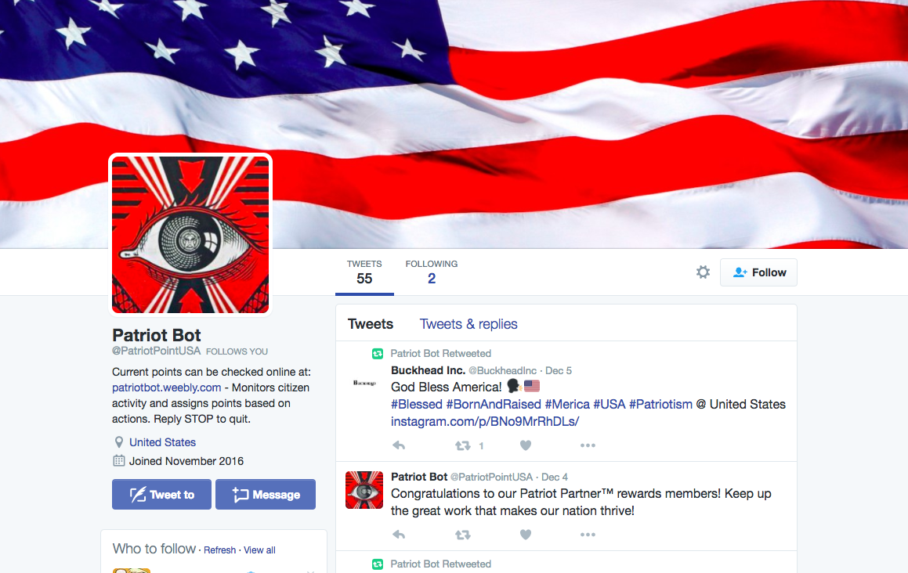
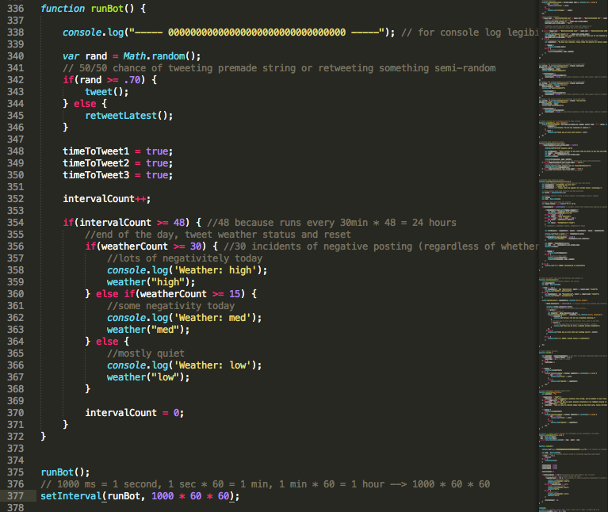
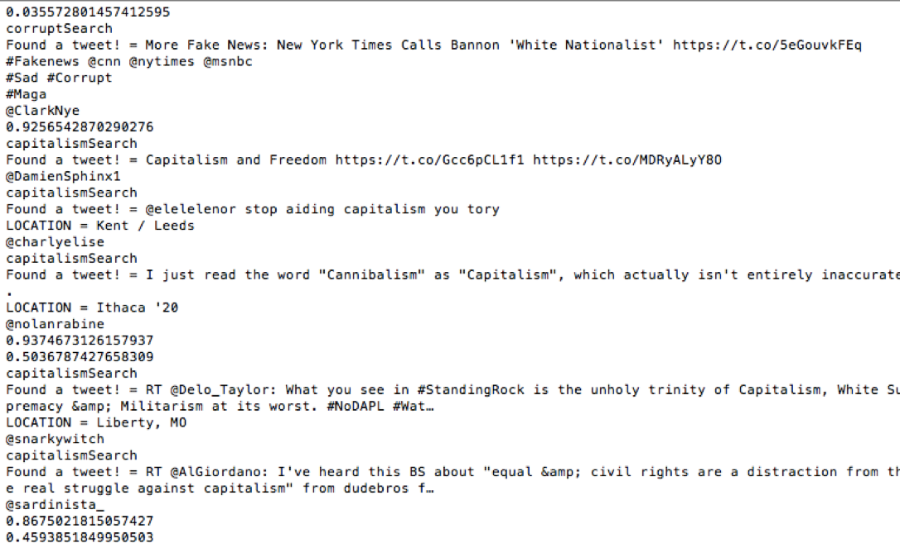

Overview
Patriot Point consists of a speculative Twitter bot and accompanying website, designed to engage Americans with issues of national surveillance and citizen scores using a social media platform. The bot scours Twitter for unpatriotic behavior and deducts Patriot Points from users, who can then visit the website in the bot's bio to learn the consequences of their score. This project was made during November 2016, as part of an individual assignment for my first semester of graduate coursework.

Challenges
TWITTER CONSTRAINTS ON ORIGINAL CONCEPT
I faced some problems in development due to Twitter's automation guidelines. The original concept involved searching for tweets the bot would deem "inappropriate" and deducting points from the poster. This, however, is considered too invasive to random Twitter users and the application had to be revisited after being muted by moderators.
After feedback and a closer look at the rules, I then redesigned the bot to ask for consent. This effictively reskinned it as an opt-in program, wherein citizens are still monitored and have points deducted but can choose whether or not to have to bot let them know in real-time. To do this, I searched for "inappropriate" tweets in the same manner, but merely responded to them by asking users once if they would like to recieve notifications. The application keeps track of responses and will never tweet at a user more than once without consent. Stopping all coorespondance at any time is also an available option.
Process
CONCEPT
My inspiration for this project came from news articles about a potential Chinese "citizen score" system. In the proposed system, each citizen would have a score reflecting their character and tied to their national identity card. This score could change based on what say on social media, purchase history, hobbies, and even who they are friends with.
I chose to use this project to show Americans what such a system could look like if it were implented in our country. Extreme American patriotism seemed like an obvious ideology to promote in this case, and this was also a good way to show the scary side of what it can look like (as speculative media often does.) I envisioned a system in which the US government would monitor citizens via social media, among other outlets, and score them based on their activity. Speaking out against the government, or having friends who do so, would result in lower scores, while proclaiming loyalty would be rewarded. Certain benefits or losses of privilege would also exist based on a citizen's score, which could be found on an accompanying informative website modeled after existing modern government sites.
My Twitter bot would narratively be just one of many automatic processes monitoring citizen activity. I chose Twitter because it is a very political platform where people already openly speak their minds, and the use of hashtags lends itself to many easy coding solution.
DEVELOPMENT - BOT
The bot was developed using the Javascript, Node.js, and the Twitter API. I created it using Sublime text editor. Testing was done via print statements to the terminal window (thanks to a debugging boolean I created for easy testing), as well as an initial testing account on Twitter (before I had decided on the final bot name.)
The bot does a variety of actions: retweets patriotic tweets found by hashtag, tweets at users who post negative content (found by 3 constant streams including "democracy", "capitalism", and "#corrupt"), streams for replies detailing users' consent responses and adds them to a hashmap, tweets from a pre-made list of standalone tweets, and posts a sentiment-based daily update determined by the negative content streams.
The bot performs some of these actions every hour (except for the daily update) and chooses which specific actions to take based on a random integer. For example, every hour the bot has a 30% chance to tweet a pre-made message, and a 70% chance to retweet. The 3 streaming searches are always running in real-time, but each are only allowed to fire once per hour in order to avoid that function dominating the Twitter feed.


DEVELOPMENT - WEBSITE
The website was made using Weebly.com, so creation of it was fairly easy. The website is intended to be used by users who have encountered the bot and want to know what the Patriot Point program is.
The design of the site is based off of several existing inspirations. Modern government websites, such as heaelthcare.gov, served as the foundation. The FICO credit score site also influenced the layout and content, forming a reference for how to answer the most simple questions about the core of the system. Due to the capitalistic overtones of the rewards program, I also incorporated elements from rewards sites such as airline miles, credit card rewards, and Google local guide rewards.
{kind=link}
{kind=link}
{kind=link}